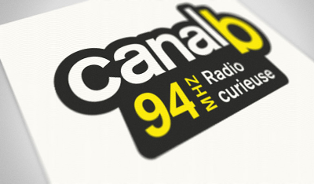

Ecouter Canal B et retrouver les émissions en détails.
- Appuyez sur play pour démarrer le live Canal B radio
0:00
0:00
La Radio Curieuse !

Radio Canal B présentation
Une radio libre à Rennes et dans le monde grâce à sa webradio, avec de la musique pop, punk, reggae, hip-hop, ska et toute la chanson expérimentale que vous pouvez imaginer. Nous sommes impliqués dans la vie locale et socio-culturelle!.
Canal B : Infos & Contacts
| Site Web Officiel: | site Web de Canal B |
|---|---|
| Page facebook Officielle: | page officielle |
| Téléphone (Standard): | 09 65 15 32 82 |
| Adresse: | 3 Rue Alexandre Lefas 35701 Rennes |